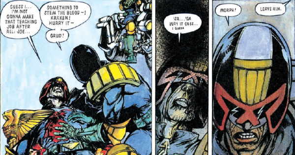

Morphy was the Senior Judge who administered Cadet Dredd's final assessment. He died on duty during Dredd's assessment of Kraken.
Art by Will Simpson
| Story Title | Parts | Pages | w indicates a wraparound coverCovers | Year(s) | Issues | Writer | Artist | Colourist | Letterer |
|---|---|---|---|---|---|---|---|---|---|
From Judge DreddQuestion of Judgement | 1 | 6 | 0 | 1984 | Reprints: JDA'90387 | Alan Grant, John Wagner | Ron Smith | <-- 2pp, [b&w] | Tom Frame |
From Judge DreddTale of the Dead Man | 7 | 54 | 662: Steve Cook 668: Jeff Anderson 2 | 1990 | 662-668 | John Wagner | Will Simpson: 1‑4 Jeff Anderson: 5‑7 various | <-- | Tom Frame |
From Judge DreddFirst of the Many | 1 | 6 | Cliff Robinson 1 | 1992 | 775 | Garth Ennis | Cliff Robinson | Gina Hart | Tom Frame |
| year | episodes | pages |
| 1978 | 0 | 0 |
| 1979 | 0 | 0 |
| 1980 | 0 | 0 |
| 1981 | 0 | 0 |
| 1982 | 0 | 0 |
| 1983 | 0 | 0 |
| 1984 | 1 | 6 |
| 1985 | 0 | 0 |
| 1986 | 0 | 0 |
| 1987 | 0 | 0 |
| 1988 | 0 | 0 |
| 1989 | 0 | 0 |
| 1990 | 7 | 54 |
| 1991 | 0 | 0 |
| 1992 | 1 | 6 |
| 1993 | 0 | 0 |
| 1994 | 0 | 0 |
| 1995 | 0 | 0 |
| 1996 | 0 | 0 |
| 1997 | 0 | 0 |
| 1998 | 0 | 0 |